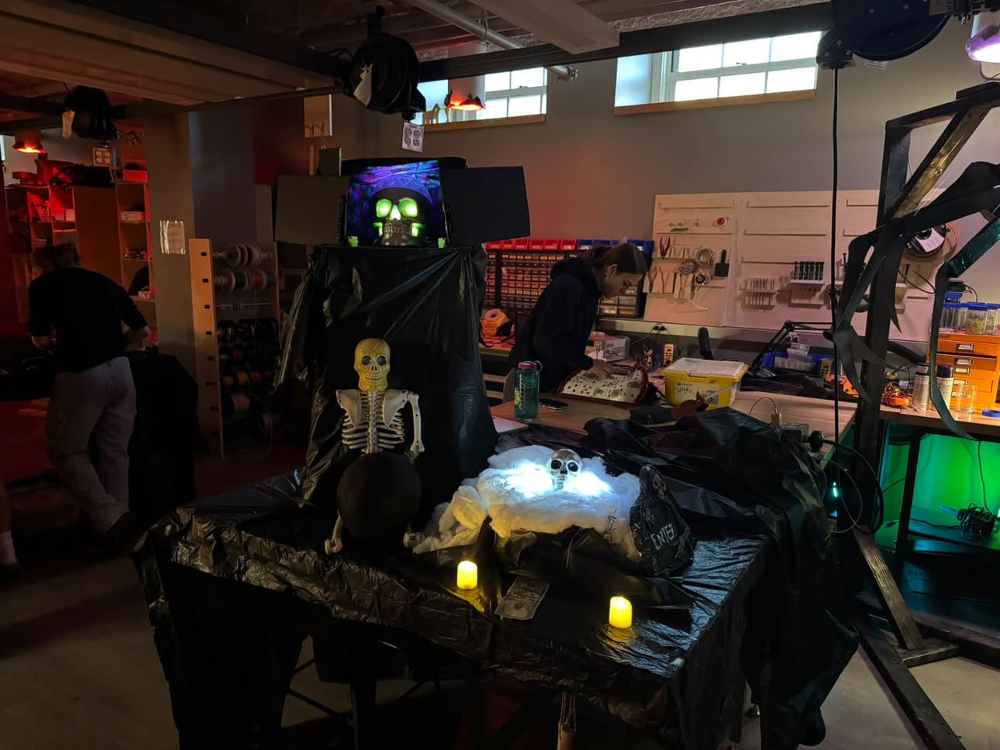

The haunted house uses two hubs to connect a motor-triggered input to a moving gate. Hub A monitors the Medium Motor on port A. It compares the motor's current position with the position recorded after its last return. When the difference reaches the 15-degree pull threshold, Hub A broadcasts a 1 to signal that the pull was detected, waits 300 milliseconds, and returns the motor to its 180-degree home angle.
The hubs communicate through the "!F" Beacon and Scanner message channel. A broadcast value of 0 means Hub A is ready; a value of 1 means a pull was detected. Hub B only accepts a 1 after it has received a 0, and disarms after accepting the trigger so repeated 1 messages do not start another sequence.
After a valid trigger, Hub B pairs the gate motors on ports E and F and moves them together. It also uses the motor on port D to press and release a button. The sequence opens the gate, presses the button, waits five seconds, closes the gate, and presses the button again. Hub B then waits for a new ready signal before accepting another pull.
Setup: Medium Motor on port A; Hub B listens for "!F".
from spikecomm import Beacon
from hub import port, sound
import runloop
import motor
HOME_ANGLE = 180
PULL_THRESHOLD = 15
RETURN_SPEED = 1050
RETURN_DELAY_MS = 300
CHECK_INTERVAL_MS = 20
READY_BROADCAST_INTERVAL_MS = 100
fire_beacon = Beacon("!F")
def broadcast_fire_state(value):
# The message protocol is 0 = ready, 1 = pull detected.
fire_beacon.broadcast(value)
async def return_home():
# Leave a short pause before the motor moves back.
await runloop.sleep_ms(RETURN_DELAY_MS)
await motor.run_to_absolute_position(port.A, HOME_ANGLE, RETURN_SPEED)
async def handle_pull():
broadcast_fire_state(1)
print("Pull detected: broadcast 1")
await return_home()
async def watch_for_pulls():
# Measure each pull from the position reached after the last return.
home_position = motor.relative_position(port.A)
time_since_ready_broadcast_ms = READY_BROADCAST_INTERVAL_MS
while True:
current_position = motor.relative_position(port.A)
if abs(current_position - home_position) >= PULL_THRESHOLD:
await handle_pull()
home_position = motor.relative_position(port.A)
# Hub B must see 0 before it can accept another 1.
broadcast_fire_state(0)
time_since_ready_broadcast_ms = 0
elif time_since_ready_broadcast_ms >= READY_BROADCAST_INTERVAL_MS:
broadcast_fire_state(0)
time_since_ready_broadcast_ms = 0
await runloop.sleep_ms(CHECK_INTERVAL_MS)
time_since_ready_broadcast_ms += CHECK_INTERVAL_MS
async def main():
await return_home()
await watch_for_pulls()
Runloop.run(main())Setup: Gate motors on ports E and F. Hub A broadcasts 0 when ready and 1 when a pull is detected.
from spikecomm import Scanner
from hub import port
import runloop
import motor
import motor_pair
# Original values in the comments
GATE_SPEED = 495
GATE_ANGLE = 80 # 55
WAIT_TIME_MS = 5000 # 5000
CHECK_INTERVAL_MS = 20
D_MOTOR_SPEED = 660
fire_received = False
armed = False
gate_busy = False
def on_fire(values):
global fire_received, armed
# Ignore messages while the gate moves, and reject unexpected formats.
if gate_busy or len(values) != 1:
return
if values[0] == 0:
# A ready message permits the next pull to trigger the gate.
armed = True
elif values[0] == 1 and armed:
# Disarm immediately so repeated reports of 1 cannot retrigger it.
armed = False
fire_received = True
print("Pull signal accepted")
async def wait_for_pull():
global fire_received
while not fire_received:
await runloop.sleep_ms(CHECK_INTERVAL_MS)
fire_received = False
async def move_gate(degrees):
# Both gate motors move together; the sign selects open or close.
if degrees > 0:
gate_speed = GATE_SPEED
else:
gate_speed = -GATE_SPEED
await motor_pair.move_tank_for_degrees(
motor_pair.PAIR_1, abs(degrees), gate_speed, gate_speed
)
async def click_button():
await motor.run_for_degrees(port.D, 55, D_MOTOR_SPEED)
await motor.run_for_degrees(port.D, -55, D_MOTOR_SPEED)
async def run_gate_sequence():
motor_pair.pair(motor_pair.PAIR_1, port.E, port.F)
await move_gate(GATE_ANGLE)
await click_button()
await runloop.sleep_ms(WAIT_TIME_MS)
await move_gate(-GATE_ANGLE)
await click_button()
motor_pair.unpair(motor_pair.PAIR_1)
async def main():
global armed, gate_busy
scanner = Scanner("!F")
scanner.listen(on_fire)
print("Waiting for 0, then 1")
while True:
await wait_for_pull()
gate_busy = True
await run_gate_sequence()
# Require a ready message received after the gate closes.
armed = False
gate_busy = False
print("Gate closed; waiting for 0, then 1")
runloop.run(main())